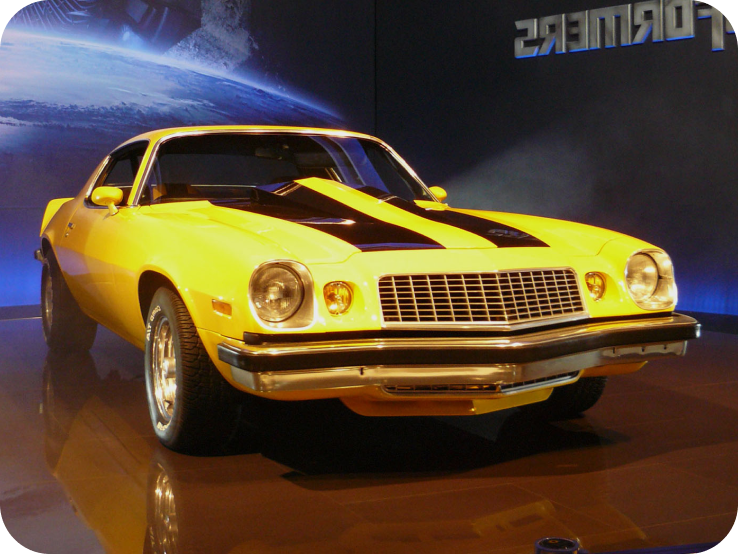

← Назад до слайдера
camaro 1977
Знімалося в фільмі Трансформери 2

Характеристика
Двигун: Потужний 5.7-літровий двигун V8, який забезпечує агресивний ревіння та класичний американський характер м'язистої машини.
Потужність: Близько 350-400 к.с., адаптована для динамічних погонь та вуличних перегонів.
Трансмісія: 4-ступінчаста автоматична або механічна коробка передач (у фільмі створює ефект надійного та витривалого авто).
Привід: Задній, що дозволяє легко зривати машину в ефектний занос і пробуксовку.
Зовнішній вигляд: Пошарпаний іржавий жовтий кузов із чорними гоночними смугами (класичний образ «іржі» на початку фільму).
Особливості: Ретро-дизайн другого покоління Camaro, сталеві диски, кастомний вихлоп та секретний прихований режим трансформера-автобота Бамблбі.